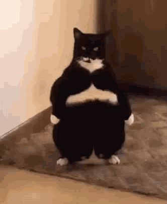

Hello world!
You have found my internet archives. I do a lot of things on my 'puter, so I found a fun way to organize all of it into one place! |
 |

|
the world’s mine oyster, which I with sword will open!I really just decided to make this site to see if I could actually do it. Somehow, it has evolved into a continuous labor of love. hopefully it will have as much longevity as my dream journal ;) |